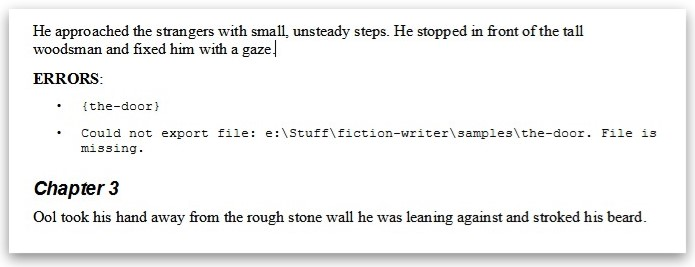

Exporting
Fiction Writer helps you export markdown documents to other formats, by integrating Pandoc in the writing flow.

Requirements¶
Important!
If you want to compile .md to other document formats using this extension, you need to have Pandoc installed on your machine, and configured to run from command line!
Pandoc is a universal document converter, that understands a large number of useful markdown syntax extensions, including document metadata (title, author, date); footnotes; tables; etc.
You can get it from here: Installing pandoc.
You can test that pandoc is properly installed by opening your prefered command-line app and running:
pandoc --version
You should get an output similar to:
pandoc 2.11.4
Compiled with pandoc-types 1.22, texmath 0.12.1, skylighting 0.10.2,
citeproc 0.3.0.5, ipynb 0.1.0.1
User data directory: C:\Users\YourUserName\AppData\Roaming\pandoc
Copyright (C) 2006-2021 John MacFarlane. Web: https://pandoc.org
This is free software; see the source for copying conditions. There is no
warranty, not even for merchantability or fitness for a particular purpose.
Markdown flavors - COMING IN NEXT ALPHA RELEASE¶
As exporting is done by using Pandoc, all Pandoc related markdown flavors can be used.
Note that Pandoc already includes a list of enabled extensions. You can read more about these here Pandoc's Markdown.
There are some extensions that are not included by default, but they can be enabled via settings panel.
Read more about the following extensions here: Non Pandc Extensions
-
attributes: allows attributes to be attached to any inline or block-level element. -
old_dashes: Selects the pandoc <= 1.8.2.1 behavior for parsing smart dashes: - before a numeral is an en-dash, and -- is an em-dash. This option only has an effect if smart is enabled. -
angle_brackets_escapable: Allow<and>to be backslash-escaped -
lists_without_preceding_blankline: Allow a list to occur right after a paragraph, with no intervening blank space. -
four_space_rule: Selects the pandoc <= 2.0 behavior for parsing lists, so that four spaces indent are needed for list item continuation paragraphs. -
spaced_reference_links: Allow whitespace between the two components of a reference link, for example, -
hard_line_breaks: Causes all newlines within a paragraph to be interpreted as hard line breaks instead of spaces. -
ignore_line_breaks: Causes newlines within a paragraph to be ignored, rather than being treated as spaces or as hard line breaks. -
east_asian_line_breaks: Causes newlines within a paragraph to be ignored, rather than being treated as spaces or as hard line breaks -
emoji: Parses textual emojis like as Unicode emoticons.
as Unicode emoticons. -
tex_math_single_backslash: Causes anything between\(and\)to be interpreted as inline TeX math, and anything between\[and\]to be interpreted as display TeX math. -
tex_math_double_backslash: Causes anything between\\(and\\)to be interpreted as inline TeX math, and anything between\\[and\\]to be interpreted as display TeX math. -
markdown_attribute: Markdown is only parsed inside block-level tags if the tags have the attributemarkdown=1. -
mmd_title_block: Enables a MultiMarkdown style title block at the top of the document. Ifpandoc_title_blockoryaml_metadata_blockis enabled, it will take precedence overmmd_title_block. -
abbreviations: Parses PHP Markdown Extra abbreviation keys, like -
autolink_bare_uris: Makes all absolute URIs into links, even when not surrounded by pointy braces <...>. -
mmd_link_attributes: Parses multimarkdown style key-value attributes on link and image references. This extension should not be confused with the link_attributes extension. -
mmd_header_identifiers: Parses multimarkdown style heading identifiers (in square brackets, after the heading but before any trailing #s in an ATX heading). -
compact_definition_lists: Activates the definition list syntax of pandoc 1.12.x and earlier. -
gutenberg: Use Project Gutenberg conventions for plain output: all-caps for strong emphasis, surround by underscores for regular emphasis, add extra blank space around headings. -
sourcepos: Include source position attributes when parsing commonmark. For elements that accept attributes, a data-pos attribute is added; other elements are placed in a surrounding Div or Span elemnet with a data-pos attribute.
Including other documents¶
Export > Include: Enabled
- Key:
markdown-fiction-writer.export.include.enabled - Enables the include file functionality
- Default:
enabled
This extension adds support for combining multiple markdown documents into one.
You can use the following syntax {file_to_include.md} the the contents of file_to_include.md will be added in the exported document.
Specifying included files can be done in multiple ways.
Include by aboslute or relative path¶
A valid path to the file:
-
like a relative path
or{my_file.md}{relative/path/to/my_file.md} -
or an absolute path
{c:\MyBook\Chapter1\my_file.md}
Include by metadata id¶
This is the recommended way to include files, as it does not depend on the filename
If the document has a metadata block with id top level field, this can be used in the include file syntax {}
For example, if my_file.md has the following contents:
---
id: prologue
---
Prologue begins here...
You can include it in another file like this:
# Prologue
{prologue}
Resolve document id¶
Export > Include: Search Document Ids in All Opened Files And Workspaces
- Key:
markdown-fiction-writer.export.include.searchDocumentIdsInAllOpenFilesAndWorkspaces - Default:
disabled
if you opt to include a file by id, and not by relative or absolute path, you have the option to search for that id only in the document workspace folder, or in all opened documents or worskpaces in Visual Studio Code.
By default, this option is disabled
Include errors¶
Export > Include: Show Errors in Output File
- Key:
markdown-fiction-writer.export.include.showsErrorInOutputFile - Adds errors to the compiled document.
- Default:
enabled
If, during the export process, some errors occured, they will be shown in a warning message before the actual export takes place.

You can choose to continue (with errors) or cancel the operation.
By default, include errors are visible in the exported document in Error paragraphs, like this:

Disable this option if you want to never see errors in exported document.
The toc document¶
A common practice is to have just one TOC document, where you include all other documents.
A simple toc.md document can look like this:
{chapter01.md}
{chapter02.md}
{chapter03.md}
{chapter04.md}
Of course a TOC document can contain any additional markdown syntax:
# My Book Title
## Preface
Some opening words
## Chapter One
{chapter01.md}
## Chapter Tso
{chapter02.md}
## The End
This is the end.
If {chapter01.md} does not exist, you will get a warning message, but the exporting can still continue with the other documents.
For example, the toc.md from the following directory:
.
├─ toc.md
├─ prologue.md
├─ part1
│ ├─ ch1.md
│ ├─ ch2.md
│ └─ ch3.md
├─ part2/
│ ├─ ch4.md/
│ └─ ch5.md
└─ epilogue.md
could look like:
{prologue.md}
{part1\ch1.md}
{part1\ch2.md}
{part1\ch3.md}
{part2\ch4.md}
{part2\ch5.md}
{epilogue.md}
Commands¶
Compile Current File¶
[TBD]
Compile Selected files¶
Compiles all selected markdown documents (having .md extension) from current directory, into one file.
The include order is filename order.
[TBD]
Compile TOC¶
Exports the TOC file.
A TOC file is a simple .md file that serves as a table of contents for exporting. The file-name can be configured under markdown-fiction-writer.export.tocFilename.
By default, the toc.md file-name will be used.
If the TOC file is searched for in two locations:
- first, in the same folder as the opened document
- second, in the workspace root.
If no TOC files is found in either location, then compile will fail.
Example:
.
├─ toc.md # The toc.md in workspace root
├─ part1
│ ├─ chapter1.md
│ ├─ chapter2.md
│ └─ toc.md # The toc.md from part.1
├─ part2/
│ ├─ chapter3.md/
│ └─ chapter4.md
-
if
chapter1.mdis opened, and Compile toc.md command is run, then/part1/toc.mdwill be used. -
if
chapter4.mdis opened, and Compile toc.md command is run, then/toc.mdfrom workspace root will be used.